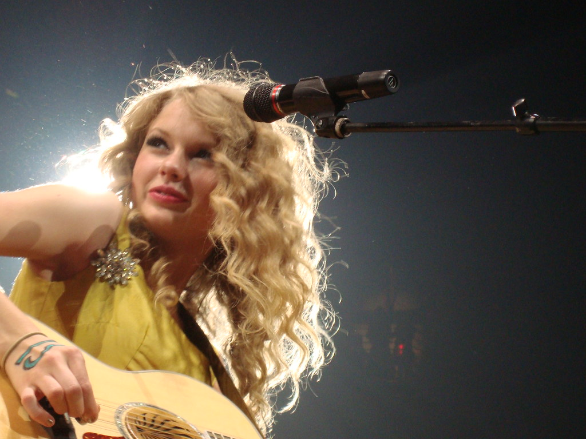
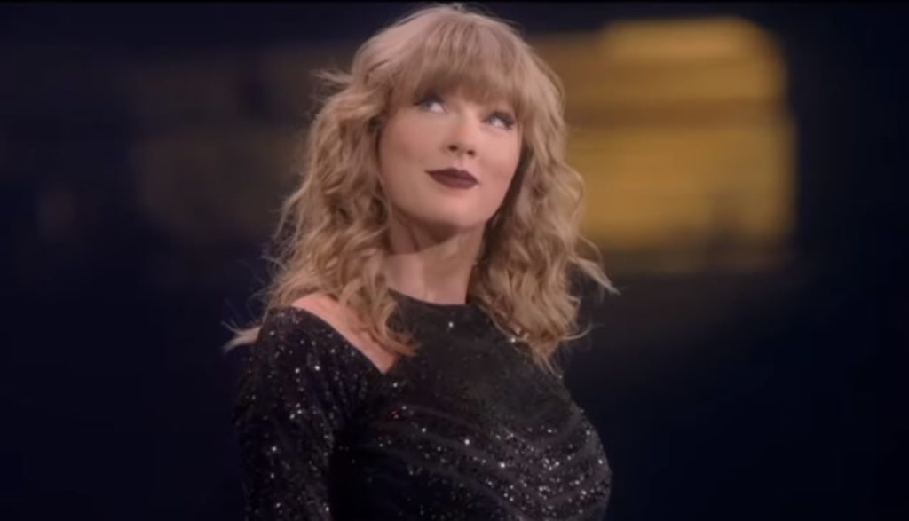

Career Beginnings
In Nashville, Taylor started working with songwriter Liz Rose during two-hour writing sessions every Tuesday afternoon after school. Later, she became the youngest artist signed by Sony/ATV publishing house, but left the group at age 14. She believed she was running out of time because she wanted to capture the early years of her life on an album while it still represented what she was going through.
At a showcase in Nashville's Bluebird Cafe in 2005, Swift caught the attention of Scott Borchetta, a record executive who was preparing to form an independent record label, Big Machine Records. She became one of Big Machine's first signings, with her father purchasing a three percent share of the company.
Taylor then started working on her debut album and persuaded Big Machine to hire Nathan Chapman to produce her songs. Her first lead single “Tim McGraw” was released in June 2006, and Taylor Swift’s self titled album was released later that year, on October 24, 2006. It peaked at number 5 on the US Billboard 200, where it spent 275 weeks. Swift was also the opening act for Brad Paisley’s 2007 tour to promote her album and spent 2006 and 2007 doing promotion on radios, television, and being the opening act for country artists in the US. Throughout 2007 and 2008, Taylor released four more singles from her debut album and all of them appeared on Billboard's Hot Country Songs chart. Swift released her first two EPs "The Taylor Swift Holiday Collection" and "Beautiful Eyes" in October 2007 and July 2008, respectively, winning accolades for all of her first three projects. She became the youngest person to be honored with the BMI Songwriter of the Year title in 2007. She won awards at the CMAs, ACMs and AMAs while also securing a nomination for Best New Artist at the 50th Grammy Awards.

Speak Now
In August 2010, Swift released "Mine”, the lead single from her third studio album, Speak Now. It debuted on the US Billboard Hot 100 chart at number three. Following criticism claiming Taylor’s songwriting was good because she worked with co-writers, Swift wrote all 17 tracks on her third record by herself as well as co-produced every song. The album was released on October 25, 2010, debuting at number 1 on Billboard 200, with 1 million copies sold in its first week.
At the 54th Grammy Awards, in 2012, Swift won Best Country Song and Best Country Solo Performance for "Mean", which she performed during the ceremony in response to her much criticized 2010 Grammy performance, serving as a testament to her abilities as a musician. Swift won several awards for Speak Now, including Songwriter of the Year at the BMI Awards, Entertainer of the Year at the ACMs and CMAs, and was named Billboard’s Woman of the Year. The album also received general acclaim from critics, with Rolling Stone praising Taylor abilities as a rockstar.
The Speak Now World Tour was done between 2011 and 2012, grossing over $123 million. In November 2011, she released a live album, the “Speak Now World Tour Live". Swift also contributed to The Hunger Games soundtrack with two original songs: “Eyes Open” and “Safe & Sound”, recorded with The Civil Wars. The latter went on to win a Grammy award as well as a Golden Globe nomination. Taylor was featured on BoB's single "Both of Us”, released in May 2012.
Reputation
After disappearing from social media and the public eye during most of 2016, Swift executed one of the most successful comebacks in history with her sixth studio album, reputation. “Look What You Made Me Do” was released as the albums’s lead single and its music video broke the record for the most views in the first 24 hours of release.
The album was released on November 10, 2017 and incorporated a heavy electropop sound, with hip hop, R&B and EDM influences. It debuted at #1 on the Billboard 200, with first-week sales of 1.21 million copies. With this achievement, Swift became the first act to have four albums sell one million copies within one week in the US. The project spawned three other international singles, including the US top-five entry "...Ready for It?".
In support of reputation, she embarked on her reputation Stadium Tour, which ran from May to November 2018. In the US, the tour grossed $266.1 million in box office and sold over two million tickets, breaking Swift's own record for the highest-grossing US tour by a woman, which was previously held by her 1989 World Tour ($181.5 million). It also became the highest-grossing North American concert tour in history. Worldwide, the tour grossed $345.7 million. On December 31st, Swift released the reputation Stadium Tour concert film on Netflix. Reputation was nominated for Best Pop Vocal Album at the 61st Grammy Awards in 2019. At the 2018 AMAs, Swift won four awards, including Artist of the Year and Favorite Pop/Rock Female Artist. After the 2018 ceremony, Swift garnered a total of 23 awards, becoming the most awarded female musician in AMA history.
